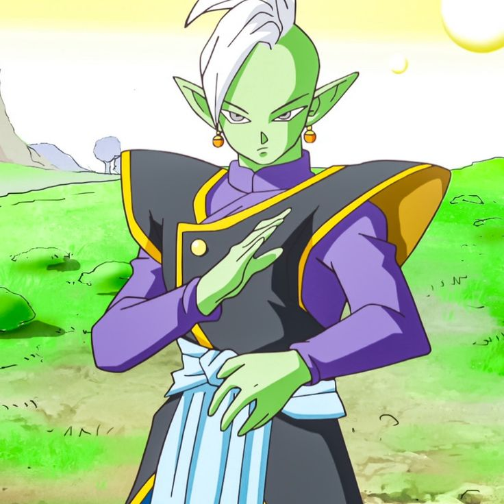
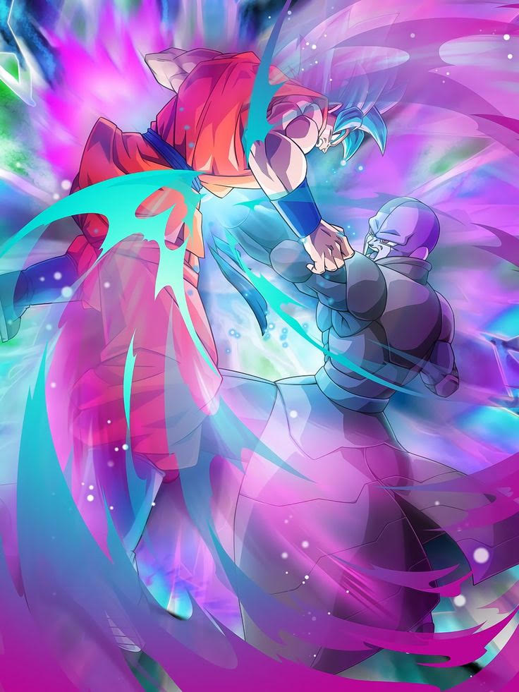
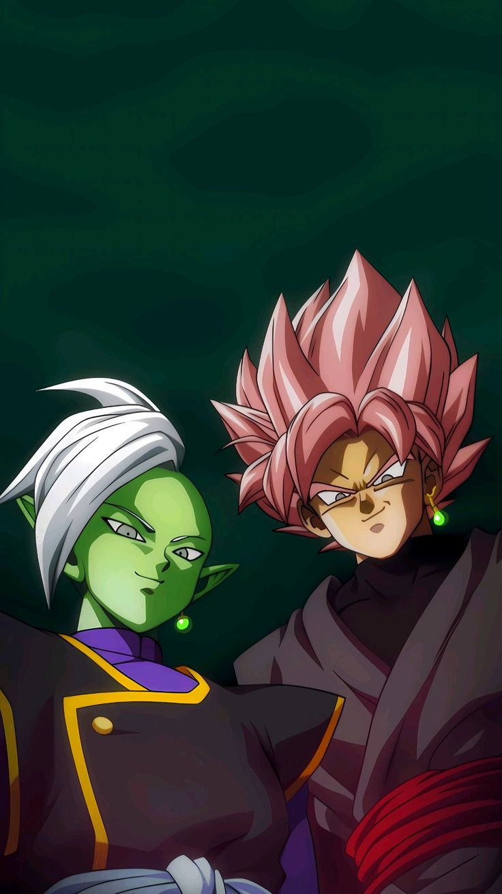
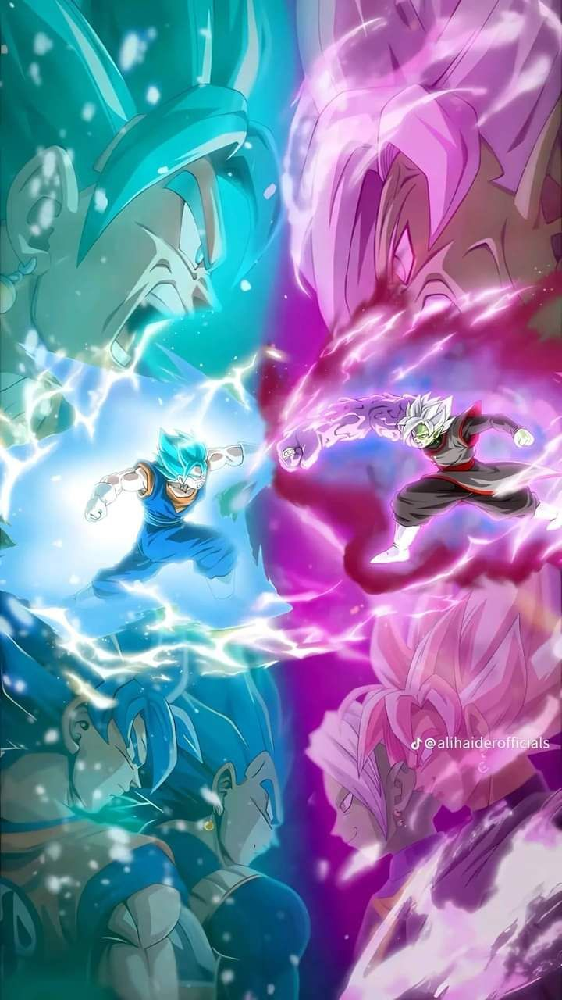
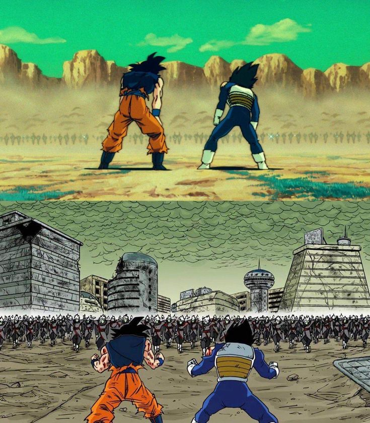
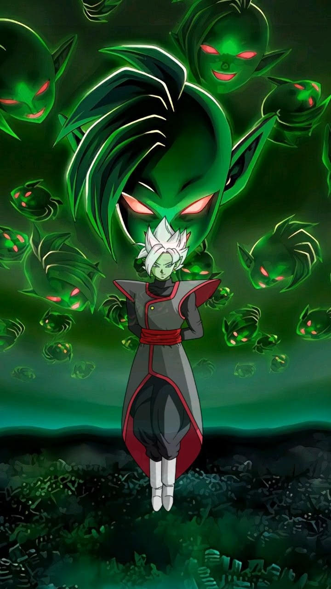
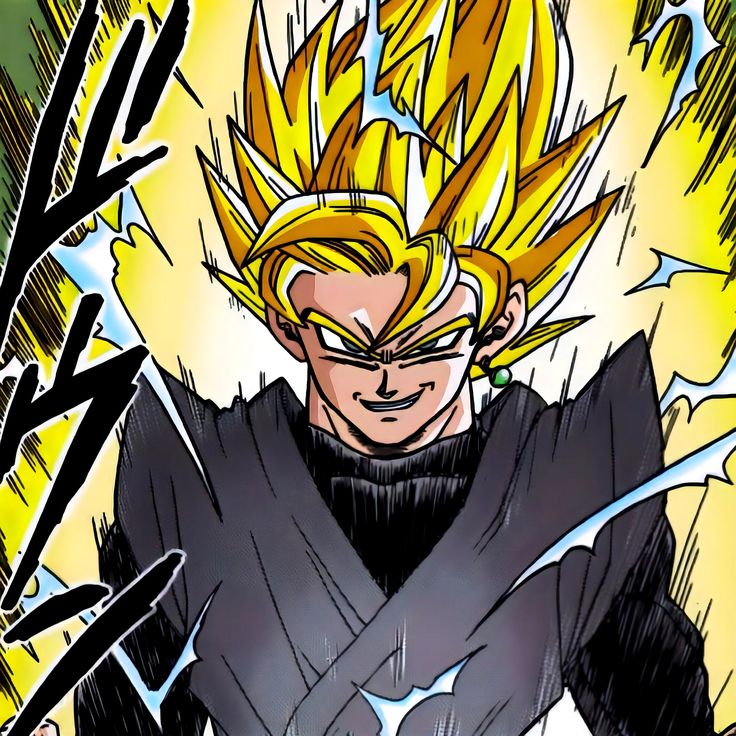
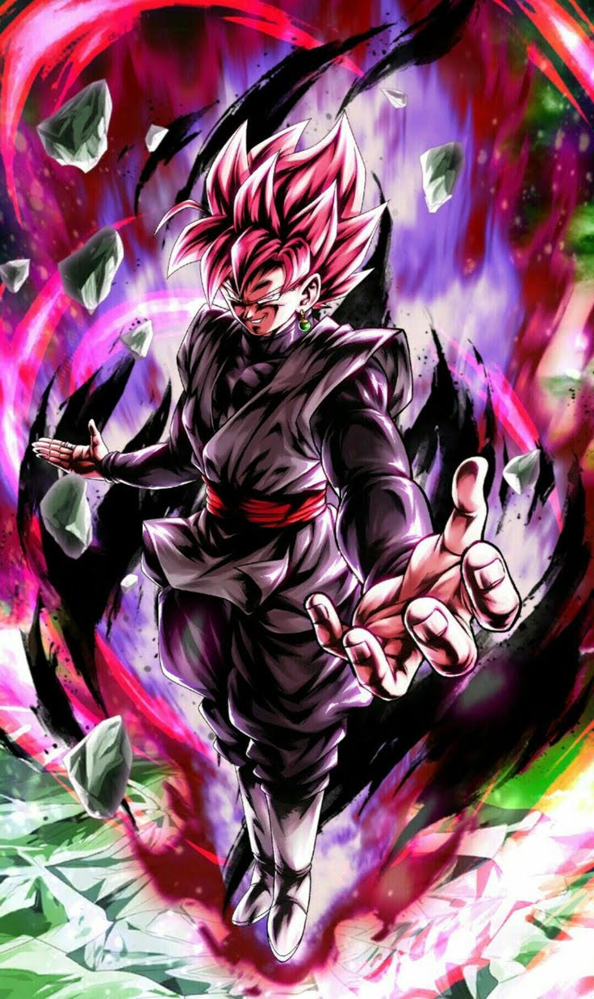
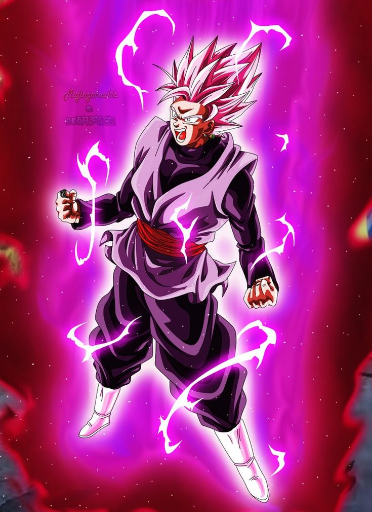
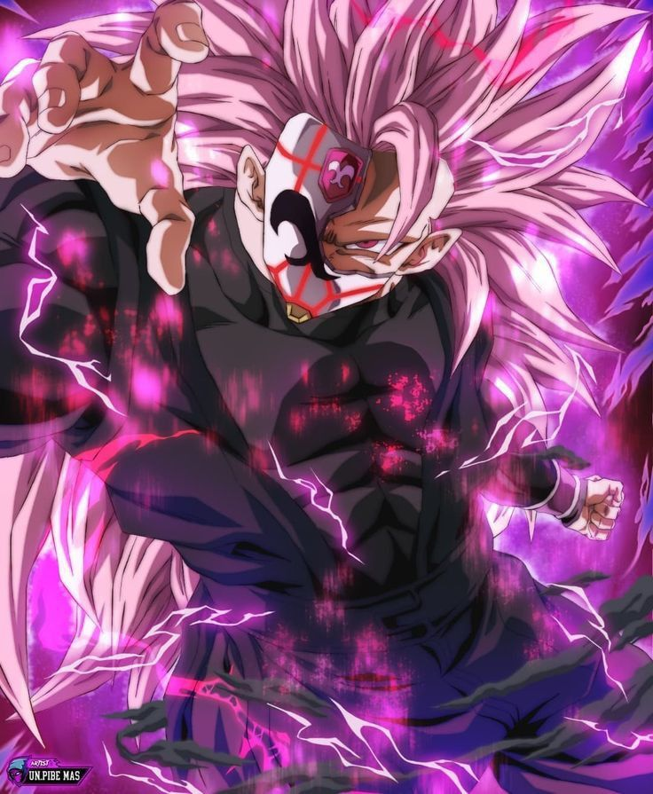

Qui est-il réellement ?
Origine :
Black Goku n'est pas un simple Son Goku qui aurait mal tourné : il s'agit en réalité de Zamasu, un apprenti Kaioshin de l'univers 10 qui, dans la timeline principale, a volé le corps de Goku grâce aux Super Dragon Ball pour atteindre son but : posséder un pouvoir suprême afin d'exterminer tous les êtres mortels qu'il juge inférieurs. Voilà ce qu'est son plan Zéro Mortel.

Zamasu est l'assistant de Gowasu, le Kaioshin de l'univers 10. Doté d'un immense talent et d'une intelligence redoutable, il est promis à un grand avenir au sein de la hiérarchie divine.

Le début de son plan Zéro Mortel
Sa descente dans la folie :
Malgré son statut divin et la neutralité qu'il devrait en retirer, Zamasu développe graduellement un profond mépris pour les mortels qu'il juge corrompus, violents et indignes d'exister. Il considère que l'univers se porterait mieux une fois débarrassé de toute forme de vie mortelle, ne laissant subsister que les dieux. Cette idéologie extrémiste le pousse à comploter en secret.
Un jour, il tombe sur une diffusion qui l'amènera à mettre son plan en action : un combat opposant deux représentants d'univers rivaux. Il s'agit du duel entre Son Goku, le Saiyan de l'univers 7, et Hit, l'assassin de l'univers 6.

Étonné qu'un simple mortel puisse être aussi puissant, Zamasu décida d'en apprendre davantage sur Son Goku et se rendit auprès de Zuno, un être omniscient de l'univers 7, pour lui poser plusieurs questions sur Son Goku, les Super Dragon Ball, mais également… sur l'échange de corps entre un dieu et un mortel.
Pendant ce temps, un événement inattendu survint : Mirai Trunks (Trunks du futur) revint du futur grièvement blessé. Il expliqua qu'après avoir vaincu Babidi et Dabra, stoppant ainsi la résurrection de Boo, un dangereux personnage ressemblant en tout point à Goku était apparu et avait décimé en très peu de temps une grande majorité de terriens : il s'agissait de Black Goku.

Trunks, qui ne faisait pas le poids face à lui, décida de revenir à l'époque de nos héros pour demander de l'aide. Goku et Végéta acceptèrent sans hésiter et tous les trois repartirent dans l'époque de Trunks.
La Vérité
À leur arrivée, Goku et Vegeta découvrent l'étendue des dégâts causés par Black Goku : la ville est en ruines et il ne reste que très peu de survivants… Et là, ils le découvrent. Black Goku, ayant senti leur énergie, est venu à leur rencontre. Dans un premier temps, il fut étonné de voir Goku et Vegeta en vie, mais trouva cela très stimulant : il avait de nouveaux adversaires face à lui.
Vegeta commença en premier le combat face à Black Goku. Tous deux en forme de base sont presque à égalité, mais la tendance s'inversera lorsque Vegeta se transformera en Super Saiyan Blue. Black Goku se fera totalement dominer par le prince des Saiyans.
C'est à ce moment qu'un individu apparaît pour soigner Black Goku : il s'agit de Zamasu. Nos trois héros se retrouvent déconcertés — et le pire n'est pas encore arrivé. Zamasu, amusé par la situation, leur révèle la vérité : Black Goku est en réalité Zamasu lui-même, qui après avoir trouvé les Super Dragon Ball demanda au dragon d'échanger son corps avec celui de Son Goku avant de l'éliminer. Il voyagea ensuite dans une autre ligne temporelle grâce à l'anneau récupéré sur son maître, pour trouver un double de lui-même et sceller une alliance.
Les deux antagonistes renversent complètement la situation et Black Goku développe une nouvelle transformation unique : le Super Saiyan Rosé. Il s'agit d'une transformation mêlant les gènes Saiyan et l'énergie divine que Black possède en lui.

Le combat devient bien plus intense lorsque les deux Zamasu décident de fusionner, donnant naissance à une entité quasi invincible et immortelle, capable de se régénérer à l'infini. Gattai Zamasu domine clairement Goku, Vegeta et Trunks simultanément, mêlant ses techniques de Kaio à celles de Goku. Il fallut que Vegeta et Goku fusionnent à leur tour pour faire apparaître Vegeto SSJ Blue afin de tenir tête à Gattai.

La fin de l'enfer
C'est à ce moment que sa fin diffère entre l'animé et le manga. Dans l'animé, Gattai devient totalement fou et change radicalement physiquement : toute sa partie droite est devenue une masse violette difforme. Dans le manga en revanche, la fusion persiste même au-delà de sa limite.
Dans le manga, une infinité de Zamasu fusionnés venus d'innombrables flux temporels apparaît et engage un combat contre Goku et Vegeta, à la manière de Metal Cooler dans le film DBZ « Les Cent Mille Guerriers de Métal ». La seule manière de les vaincre est de faire appel à Zen-o, le Dieu des Dieux de l'univers Dragon Ball — l'être ultime et invincible de l'œuvre — qui exterminera non seulement tous les Zamasu, mais supprimera également la ligne temporelle de Trunks.

Dans l'animé, c'est une autre histoire : Zeno supprime bien l'univers de Trunks, mais on n'y retrouve pas l'armée de Gattai Zamasu. En effet, lorsque Vegeto l'a poussé à bout, Zamasu fusionne avec le monde lui-même et une multitude de visages le représentant couvre le ciel dans son entièreté.

Les Transformations :





Les Techniques
Black Goku, à travers toutes ses apparitions, a développé une multitude de techniques. Voici un tableau regroupant les plus iconiques :
| Nom | Description | Vidéo démonstratif |
|---|---|---|
| Super Black Kaméhéméha | Un kaméhéméha obsucur au couleur de Black Goku. Il évolue au fils de ses transformation | |
| Black Power Ball | Une sphère d'énergie dorée et noire à forte puissance explosive créée dans une main | |
| Divine Lasso | C'est sa technique signature : Une lame d'énergie transperçant formant de multiple lame qui exploseront | |
| Sickle of Sorrow | Il s'agit de sa mythique faux d'énergie créer après avoir transformé sa colère. Elle créer des failles dimensionnelle et des perurbations de l'espace | |
| The Work OF the God | Il créer des clones de lui-mêmeà l'aide de l'énergie de la faille dimensionnelle |